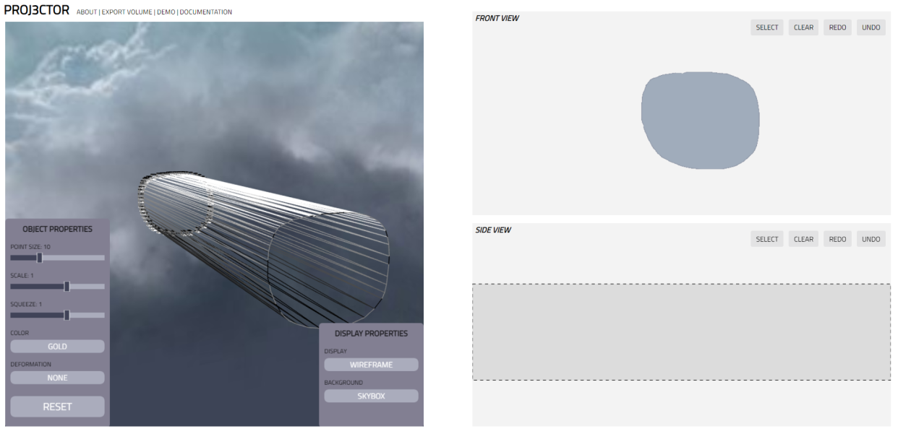
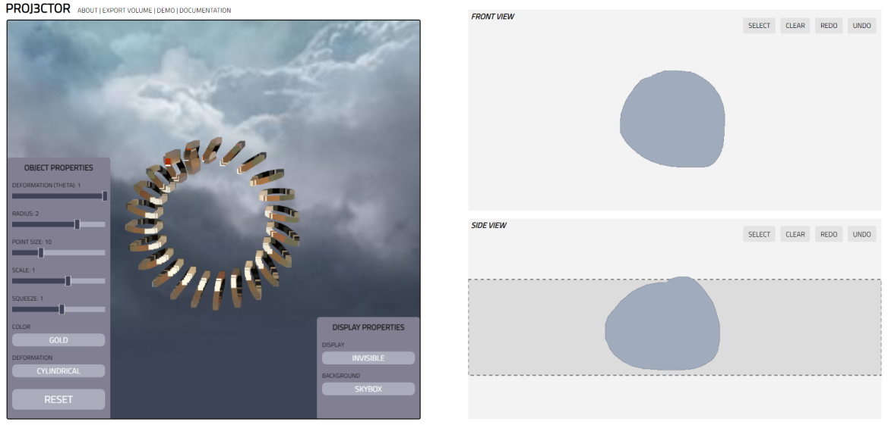
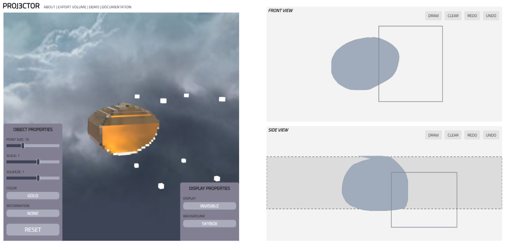

We can also edit the point size, scaling, and squeeze:

The blank starting screen of PROJ3CTOR looks like this:
Let's start with something simple! Begin by drawing a circle on the FRONT VIEW screen.
As you can see, our input has been replicated on the 3D viewer to the left. Let's draw another circle on the SIDE VIEW screen.
And that's it! The created 3D volume can now be viewed and altered on the left. Toggle the Display button until it says INVISIBLE to see the object more clearly.
From here, we can change the material of the object:
Or the background:
We can also edit the point size, scaling, and squeeze:
Next, click on the Deform button to try out some deforms.
We can also modify the object in a specific area using the selection tool. Toggle the SELECT button on either of the right screens.
That's pretty much it! You can further modify the object using the variety of sliders on the bottom left. PROJ3CTOR can be used to create simple volumes:
Or more complex objects, especially after deformations: